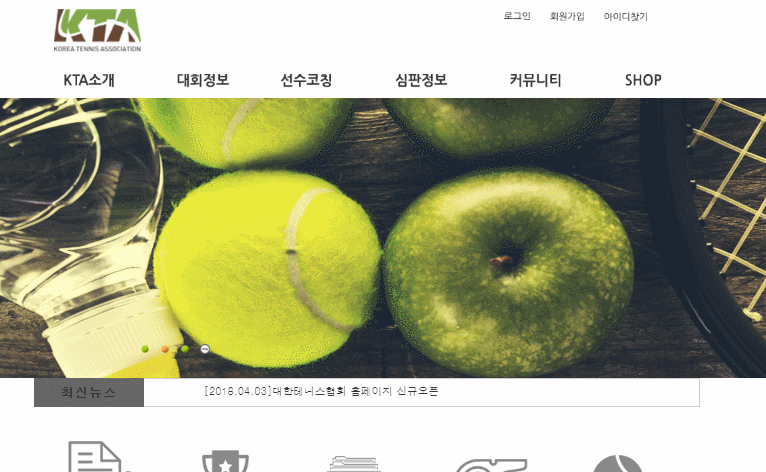
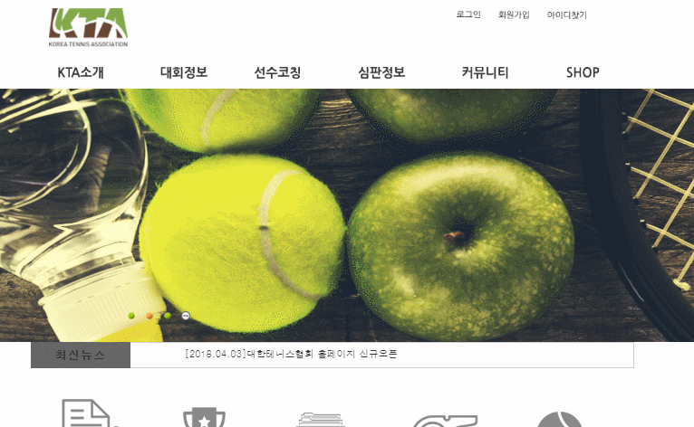
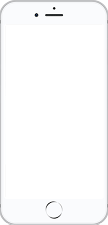
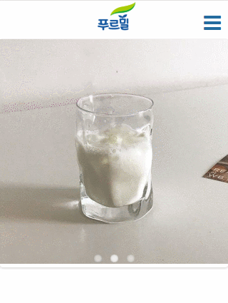

프로필
탁준영 卓晙英
TAK JUN YEONG +82 010.7272.4689- 1995.05.08
- zhuo95@naver.com
- Sengbukgu, Republic of Korea
- SKILLS
- HTML5, CSS3 / Java Script, jQuery / Bootstrap / CMS(word press) / Php (include)
- Design Skills
- Photoshop, Illustration
- Development Web
- Pc web / Mobile Web / Responsive web / Bootstrap Web / Wordpress
기업형
-
 

-
-
푸르밀 웹사이트 제작
기존 웹사이트의 산만한 Interface, Image Alt
제작기간
누락으로인한 접근성 부재를 문제점으로 삼아
트렌드에 맞는 UI와 웹 표준을 지향하는 마크업으로 접근성을 고려하여 새롭게 구축하였습니다.2020. 01. 03 ~ 02. 01 (한 달)
제작스킬- Adobe Photoshop, Illustrator
View Web Site
- HTML5/CSS3, Javascript, jQuery
- Ajax(Json), php(include)
- W3C 웹표준 마크업 검사, 크로스브라우징 완료
-
푸르밀 웹사이트 제작
모바일
-  
-
-
푸르밀 모바일 사이트 제작
메인화면에서 사용자가 원하는 경험을 중심으로 퀵메뉴를 구분하고, 컨텐츠의 기능과 성격에 맞춰 위계를 재정렬한 모바일 버전입니다.
제작기간2020. 02. 06 ~ 02. 23 (약 2주)
제작스킬- Adobe Photoshop, Illustrator
View Mobile web Site
- HTML5/CSS3, Javascript, jQuery
- CSS3(media query)와 미디어 쿼리를 이용한 기기별 해상도 서비스
- W3C 웹표준 마크업 검사, 웹접근성검사
(K-WAH), 대표 기기별 테스트 완료
-
푸르밀 모바일 사이트 제작
반응형
-

-
-
5tardium 반응형 사이트
세계적인 DJ들이 내한하여 주제로 한 사이트로써, 다양한 디바이스에서 폭 넓게 이용할 수 있도록 반응형 웹을 구축하였습니다.
제작기간2020. 02. 29 ~ 03. 03 ( 3일 )
제작스킬- Adobe Photoshop, Illustrator
View responsive web Site
- HTML5/CSS3, Javascript, jQuery
- CSS3(media query)와 미디어 쿼리를 이용한 기기별 해상도 서비스
- W3C 웹표준 마크업 검사, 웹접근성검사
(K-WAH), 대표 기기별 테스트 완료
-
5tardium 반응형 사이트

워드프레스
-

-
-
Wordpress 사이트 제작
드라마 "종이의 집"을 주제로 한 사이트로써, 워드프레스를 이용해 사이트 웹을 제작하였습니다.
제작기간2020. 03. 07 ~ 03. 11 ( 4일 )
제작스킬- Adobe Photoshop, Illustrator
View Wordpress Site
- HTML5/CSS3, Javascript, jQuery
- CSS3(media query)와 미디어 쿼리를 이용한 기기별 해상도 서비스
- W3C 웹표준 마크업 검사, 웹접근성검사
(K-WAH), 대표 기기별 테스트 완료
-
Wordpress 사이트 제작